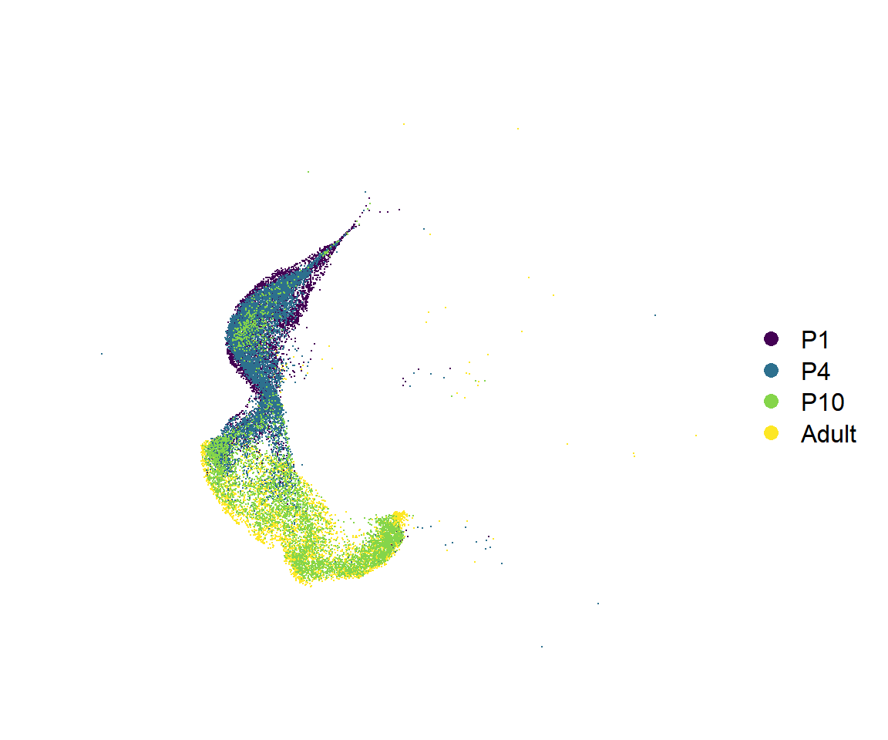
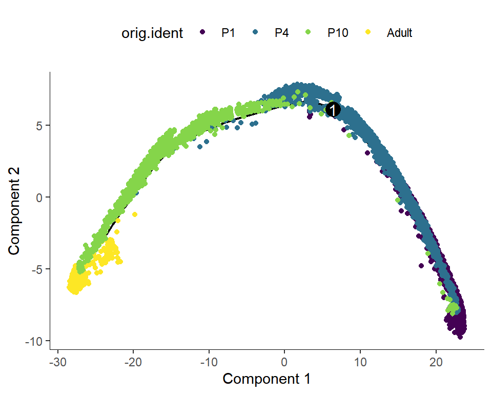
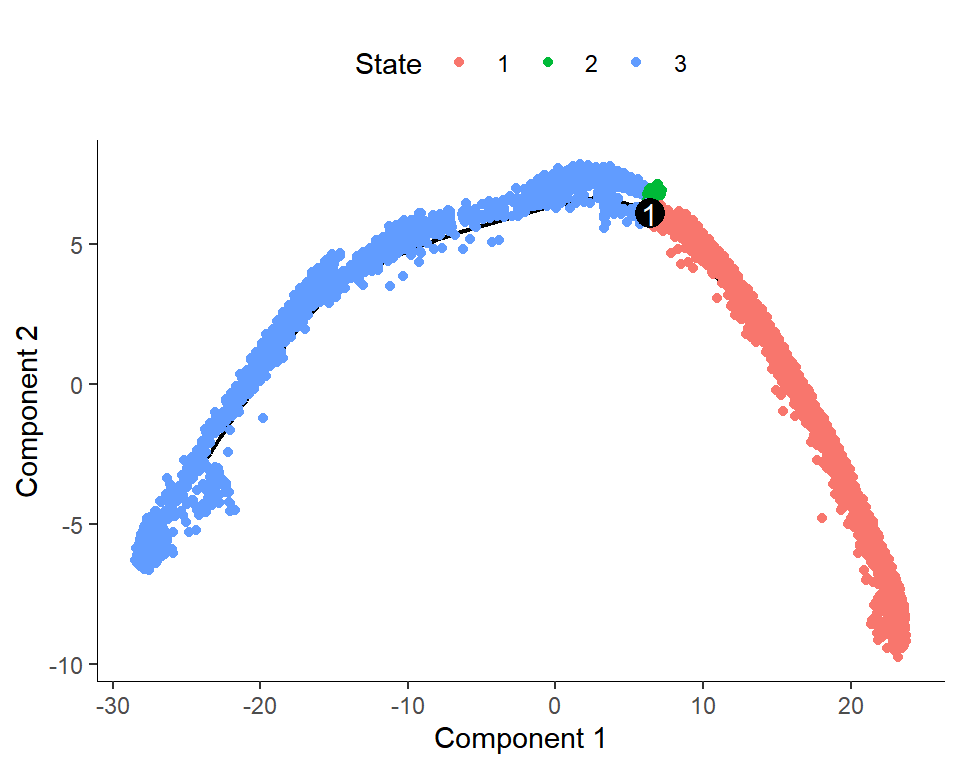
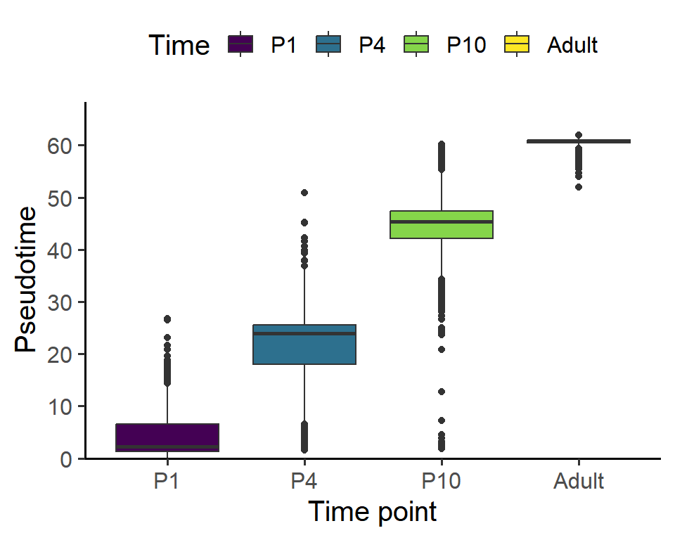
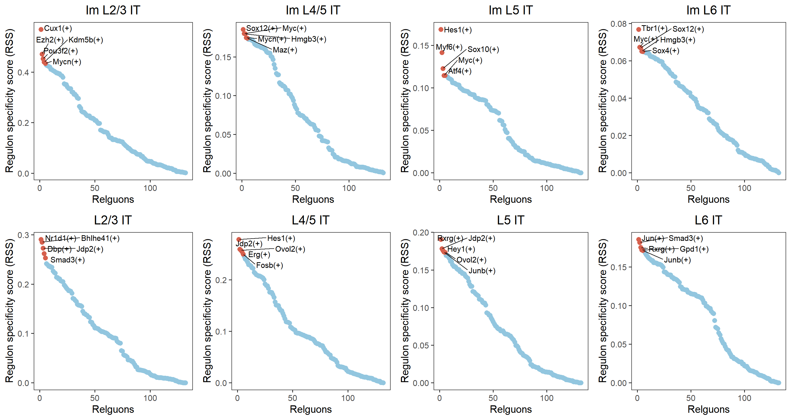

Code
library(Seurat)
library(tidyverse)
library(monocle)
library(SCopeLoomR)
library(ggrepel)
source('bin/Palettes.R')library(Seurat)
library(tidyverse)
library(monocle)
library(SCopeLoomR)
library(ggrepel)
source('bin/Palettes.R')seu.harmony <- readRDS('../data/seu.harmony.rds')
seu.IT <- subset(seu.harmony, cells=colnames(seu.harmony)[which(
seu.harmony$SubType %in% names(col_SubType)[1:8]
)])
cds <- readRDS("../data/Figure3/cds.rds")seu <- seu.IT
seu$orig.ident <- factor(seu$orig.ident, levels = c("P1","P4","P10","Adult"))
Figure_S3A <-
DimPlot(seu,
reduction = 'umap', group.by = "orig.ident", label = F,
cols = col_Time) +
theme(axis.line = element_blank(), axis.ticks = element_blank(),
axis.text = element_blank(), plot.title = element_text(size = 30)) +
labs(x='', y='', title = "") +
coord_fixed()
Figure_S3A
ggsave("../../Figure/FigureS3/Figure_S3A.pdf", plot = Figure_S3A,
height = 5, width = 6, units = "in")Figure_S3B <-
plot_cell_trajectory(cds, color_by = "Pseudotime") +
scale_color_gradientn(colours = sciRcolor::pal_scircolor(96))
Figure_S3B
ggsave("../../Figure/FigureS3/Figure_S3B.pdf", plot = Figure_S3B,
height = 4, width = 5, units = "in")cds$orig.ident <- factor(cds$orig.ident, levels = c("P1","P4","P10","Adult"))
Figure_S3C <-
plot_cell_trajectory(cds, color_by = "State")
Figure_S3C
ggsave("../../Figure/FigureS3/Figure_S3C.pdf", plot = Figure_S3C,
height = 4, width = 5, units = "in")data <- data.frame(
Pseudotime = cds$Pseudotime,
Time = as.character(cds$orig.ident)
)
data$Time <- factor(data$Time, levels = c("P1","P4","P10","Adult"))
Figure_S3D <-
ggplot(data, aes(x=Time, y=Pseudotime, fill=Time)) +
geom_boxplot() +
labs(x="Time point", y="Pseudotime") +
scale_y_continuous(breaks=seq(0,65,10), limits = c(0,65),
expand = expansion(mult = c(0, 0.05))) +
theme_classic(base_size = 15) +
theme(legend.position = "top") +
scale_fill_manual(values = col_Time)
Figure_S3D
ggsave("../../Figure/FigureS3/Figure_S3D.pdf", plot = Figure_S3D,
height = 4, width = 5, units = "in")loom <- open_loom('../data/Figure3/SCENIC/aucell.loom')
regulons_incidMat <- SCopeLoomR::get_regulons(loom, column.attr.name="Regulons")
regulonAUC <- SCopeLoomR::get_regulons_AUC(loom,column.attr.name='RegulonsAUC')seu <- seu.IT
seu$Time_subtype <- seu$SubType
Time_subtype <- names(col_SubType)[1:8]
#rss <- calcRSS(AUC = getAUC(regulonAUC)[,seu$Time_subtype %in% Time_subtype],
# cellAnnotation = as.character(seu$Time_subtype[seu$Time_subtype %in% Time_subtype]))
#rss <- as.data.frame(rss)
#saveRDS(rss, "../../data/rds/Figure3/rss.rds")
rss <- readRDS("../data/Figure3/SCENIC/rss.rds")
Time_all <- Time_subtype
plist <- list()
for (i in 1:length(Time_subtype)){
Time <- Time_all[i]
data <- rss
data$label <- rownames(data)
data$label[!rownames(data) %in% rownames(data[order(data[,Time],
decreasing = T),])[1:5]] <- ""
data <- data[order(data[,Time], decreasing = T),c(Time, "label")]
colnames(data) <- c("Rss", "label")
data$Type <- "highlight"
data$Type[data$label==""] <- "other"
plist[[i]] <-
ggplot() +
geom_point(data[data$Type=="other",], mapping=aes(x=6:nrow(data), y=Rss), size=3, color="#92c6df") +
geom_point(data[data$Type=="highlight",], mapping=aes(x=1:5, y=Rss), size=3, color="#d6604d") +
geom_text_repel(data, mapping=aes(x=1:nrow(data), y=Rss, label = label),
max.overlaps = getOption("ggrepel.max.overlaps", default = 20),
size = 4,
color = 'black') +
theme_bw(base_size = 15) +
theme(panel.grid = element_blank(), legend.position = "none",
plot.title = element_text(hjust = 0.5)) +
labs(x="Relguons", y="Regulon specificity score (RSS)", title=Time)
}
Figure_S3E <- cowplot::plot_grid(plotlist = plist, ncol = 4)
Figure_S3E
ggsave("../../Figure/FigureS3/Figure_S3E.pdf", plot = Figure_S3E,
height = 8.5, width = 16, units = "in")